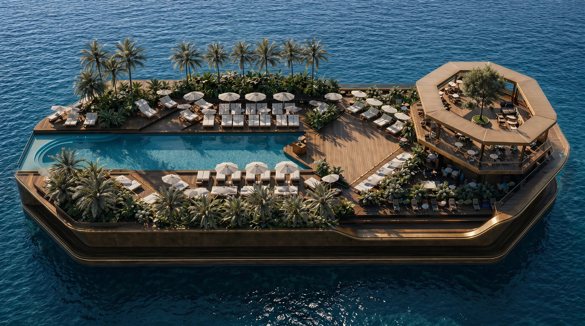
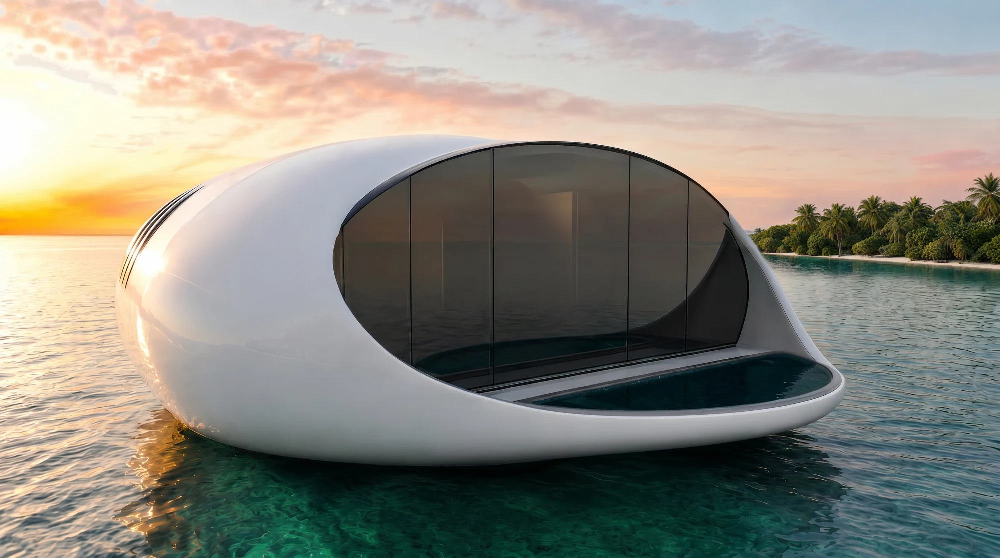
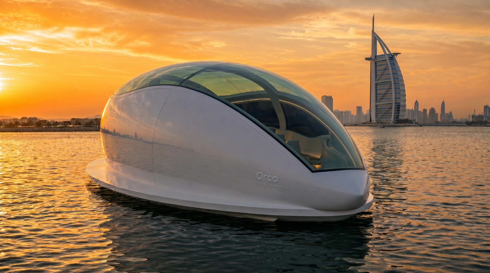
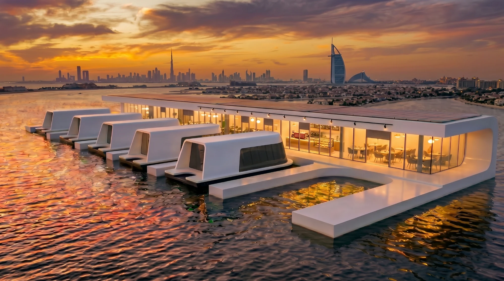
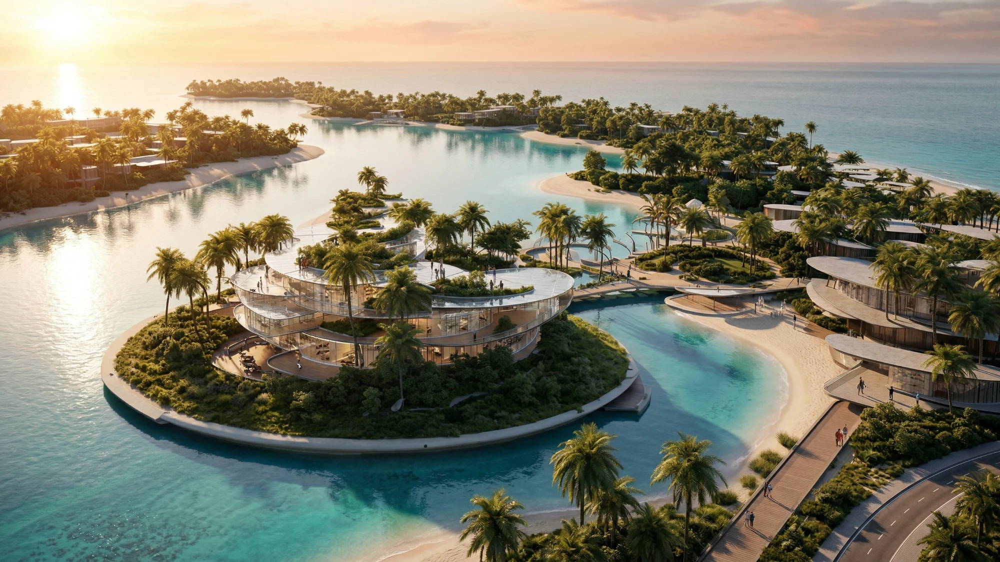
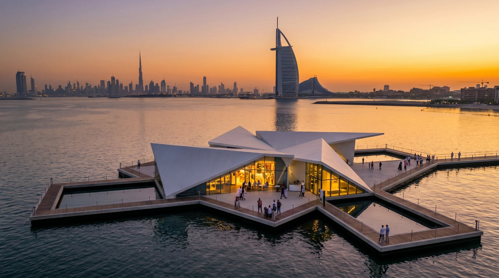
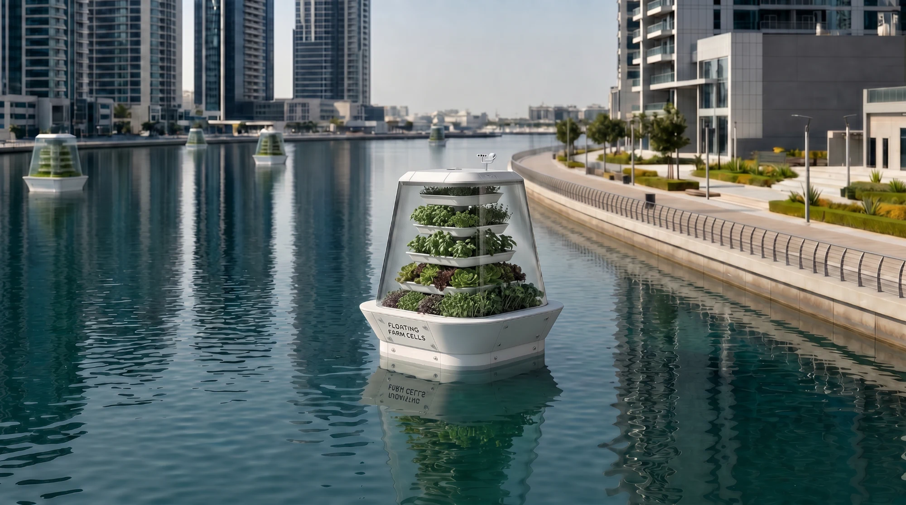
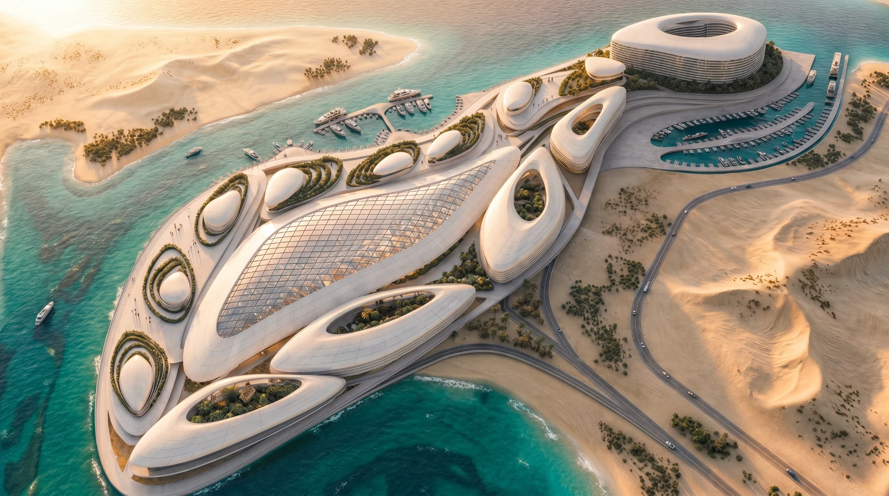

Aquatic Architectswebsite, content, and now the feed.
Three workstreams for Aquatic Architects, the Middle East's authority in marine architecture. We designed and built the website, produced the AI content for every project in their portfolio, and now run their social. An engagement that started as a site and became the studio behind their output.


We designed and built the site, then produced everything that runs on it: the 3D vessel renders, the photography treatment, the campaign films, and the social calendar that keeps it fed. One studio across design, content and planning, so the site and the feed never drift apart.
Visit aa-ds.comWebsite. Content. Social.
It began as a website and did not stop there. Once the site was live it needed filling, and every project in the portfolio needed imagery. Now the same pipeline feeds the social account.
The website was designed and built for desktop and mobile as one system: a deep-teal palette, editorial type, and a layout that lets each project breathe like an exhibit. Scenes reveal on scroll, so the architecture is experienced rather than listed.
Real-time 3D brings the structures into the browser, every scene rebuilt to load fast and hold a smooth frame rate on a phone as well as a desktop.
The content followed. Every project in the portfolio, from Oshun to the cruise terminal, was produced as AI-generated and studio-finished imagery, so the site launched full rather than waiting on photography that did not exist yet.
The social is where we are now: the same pipeline, run as an always-on account, on palette and on brand between launches.
The mobile build. Thumb-first.
The full experience reflowed for phones. Swipe through the key screens.
Scenes that unfold on scroll.
Each project is narrated as a sequence: the structure builds, reveals and resolves as the visitor scrolls.
Build it. Fill it. Run it.
Three workstreams in sequence, each one making the next possible. The third is still running.
Design and Build
Desktop and mobile as one system, with scroll-driven storytelling and real-time 3D rebuilt for the browser. Delivered live.
AI Content Production
Imagery produced for every project in the portfolio, AI-generated and studio-finished, so the site launched full rather than waiting on photography. Delivered.
Social Media
The same pipeline run as an always-on account: a grid that reads as one presence, keeping the feed alive between project launches. Running now.








Every project, pictured.
AI-generated and studio-finished imagery covering the whole portfolio, now composed into a grid that reads as one continuous presence.
“ A marine architecture studio should feel like the deep. Calm, immersive, precise. We built the site to carry that, then produced everything that fills it.ILLUSORR